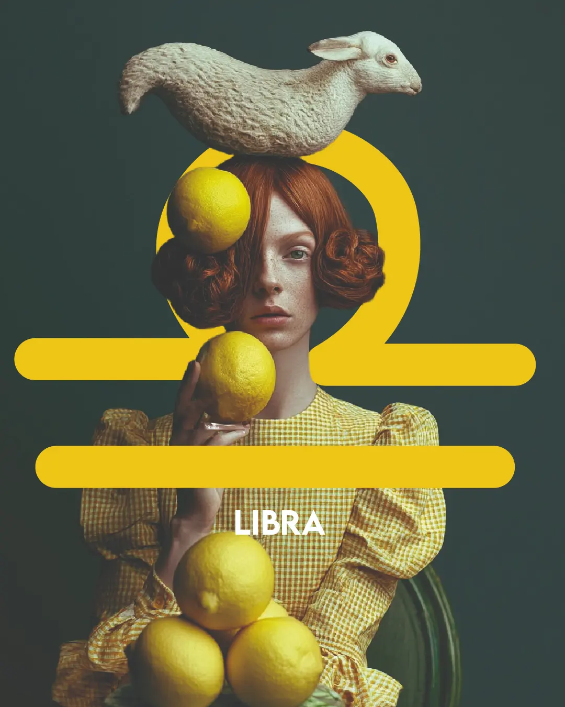

Spotify

Cruza el amor como un puente.
Gustavo Cerati
En Libra aparece por fin la conciencia de la otredad. Lo que no soy se revela y me muestra un mundo más allá de mi mundo. El otro es el puente que me permite ir más allá de las fronteras de la individualidad, para encontrarme del otro lado con el mundo. Al mismo tiempo, el otro es un espejo que me revela parcialmente lo que soy, que me permite reconocerme. El rostro solo puede verse en un reflejo, sólo así podré reconocer lo que soy.
El solo hecho de nacer nos vuelve merecedorxs de amor. No hay esfuerzo que hacer, ni mérito que acumular. Lo único posible es acercarse a cosas y a personas que permitan que el amor circule, que reconozcan las buenas cualidades que tenemos, y que nos permiten ser amadxs. Ser reconocidxs nos aloja en el seno de lo humano, nos da un lugar en la familia de las personas. Así de importante es. Alcanza con aceptar que nuestra condición es un regalo, un legado de quienes nos han sostenido lo suficiente como para que podamos vivir.
La belleza es armonía, equilibrio. Es un efecto de la forma en la que la sustancia se ordena y aparece. La belleza es un acierto delicado, es un balance exacto que nos permite sentir la felicidad del goce estético. En una imagen, en un cuerpo, en un texto, las cosas dialogan contactando con regiones profundas, misteriosas de nuestro interior. Algo convoca lo bello, quizás una textura común con nuestra alma, quizás un punto de contacto con la sensibilidad humana, con una conciencia de lo sutil que nos hace ser lo que somos como especie.
Claro que muchas veces aparecerán los mandatos hegemónicos de una belleza imposible trayendo angustia y malestar, porque nunca se es lo suficientemente bellx, lo suficientemente hegemónicx. La belleza puede ser una condena que pesa sobre nuestros cuerpos y nos fuerza a intentar encajar en donde no es cómodo. La comparación y la exigencia de una forma abstracta que deberíamos poder tener trae malestar e incomodidad, pero es un camino que recorreremos inevitablemente hasta llegar a afirmarnos en la mirada amorosa de lxs demás y en el valor que cosechamos con el tiempo.
En el arte nos encontramos con lo que nos hace ser humanos, la delicadeza de aquellos gestos que no están destinados a sobrevivir, sino que se hacen por el placer de contactar con algo que nos cautiva de un modo o de otro. Es lo que aparece cuando nuestras necesidades están atendidas adecuadamente, o cuando podemos pensar más allá de ellas, y así encontrarnos con una vida más grande y más amplia. La conciencia anida en el cuerpo y se proyecta hacia lo sutil.
En Libra los protocolos muchas veces anulan, desarman la posibilidad de desplegar lo bello. La gracia anida en los detalles sutiles, en la suavidad con la movemos el pincel en la hoja. Pero a veces los detalles se vuelven corsé, aprisionando la sustancia más que permitiendo que se exprese en una forma armónica y bella. El protocolo muchas veces permite que se opere sobre la realidad, pero es más valioso en lo funcional que en lo estético o en lo terapéutico, en donde el valor está en la singularidad, en lo sutilmente único de cada persona.
Muchas veces Libra se defiende juzgando. A través del juicio a lo que el otrx es o hace, podemos construir una distancia que nos da una sensación cómoda, que nos hace sentir a salvo. Pero el peligro del juicio es que se vuelve autoexigencia moral. Juzgo e inevitablemente me juzgo a mí.
Cuando la energía de Libra es fuerte en tu carta tendés a usar máscaras para ser aceptadx y valoradx. No hace falta, fingir, no es necesario que seas quien no sos para ser amadx por lxs demás. Las máscaras que uses van a hacerte sentir solx. Pero también es cierto que los demás te importan, que son valiosos, que el vínculo no es solo un pasatiempo o un lugar de encuentro con alguien para sentirse bien. El otrx te constituye y te importa. Dejarte ver, mostrarte genuinamente traerá alivio, aunque pueda suponer algún conflicto y alguna pérdida.
Si no sabés qué tenés en Libra...
Si no sabés qué tenés en Libra...
Buscá este símbolo en tu carta:
Los Planetas
El Sol
El Sol
Con el Sol en Libra aparece un enorme talento en relación al equilibrio y la armonía. Sea como fuere que se decida vestirse o hacer las cosas, la percepción externa va a registrar armonía. En un primer momento es frecuente encontrar una tendencia fuerte a acomodarse al canon estético, al manual de buenas costumbres. En un segundo momento aparece algo más propio: la noción de armonía tan incorporada que produce belleza naturalmente, sin necesidad de seguir ningún canon.
Las profesiones vinculadas al Estado, lo judicial y lo institucional convocan mucho a estos soles. El mundo de la abogacía también, con ese proceso de acomodar la realidad a un lenguaje técnico, de darle forma a lo que ocurre. El Sol puede encontrar un espacio de despliegue genuino en esas formalizaciones.
Y está toda la dimensión de la belleza: diseño gráfico, indumentaria, interiores, arquitectura centrada en lo estético más que en lo funcional, el arte en general.
Hay también una vocación intelectual muy fuerte. El Sol en Libra tiene un talento particular para nombrar cosas, hacer puentes entre personas a través del lenguaje. Cuando el lenguaje permite entrelazar distintas individualidades, hay algo que se vuelve prodigioso.
Los vínculos uno a uno, los vínculos íntimos, son muy importantes. La diferencia respecto de la Luna es que con el Sol la tendencia a abandonarse para acomodarse al otro es menor — hay más posibilidad de estar genuinamente en vínculo sin tanto dejar de lado lo propio.
La gran potencia de lo libriano es la capacidad de contemplar los dos lados, de identificar las opciones, de entender de dónde viene y para dónde va cada cosa. El desafío es que elegir implica romper el equilibrio — inclinar la balanza en una dirección. Si dudar es libriano, elegir es ariano. Y toda decisión tiene un componente necesariamente irracional, deseante, que la razón sola no puede proveer.
La Luna
La Luna
La Luna en Libra construye seguridad emocional en la mirada del otro. Y eso produce algo parecido a lo que encontramos en la Luna en Virgo: una tendencia a acomodarse demasiado a los demás, a poner en el centro lo que el otro necesita, quiere, es, da.
La diferencia es sutil pero importante. En Virgo el acomodamiento tiene que ver con la funcionalidad — servirle al otro, darle algo concreto. En Libra tiene que ver con la imagen: ser algo que al otro le resulte valioso, bello, vistoso. Hacer aquello que el otro quiere hacer. Una complacencia orientada fundamentalmente al deseo ajeno.
La imagen es elocuente: quiero que mi madre esté orgullosa de mí — entonces soy elegante, inteligente, o cualquier atributo libriano que garantice ese afecto. Me constituyo en algo valioso para ella.
Un problema muy frecuente con estas lunas es el merecimiento. La sensación de no merecer, o de tener que hacer un gran trabajo para merecer el amor, el afecto, el cuidado. La clave no está en convencerse de que se merece, sino en ubicar que el amor que llegó fue el que pudieron dar — no el que se merecía o no se merecía. Por más mérito que se haga, no va a haber más amor de quien no puede dar más.
Todos y todas nacemos mereciendo amor. Solo el hecho de nacer nos vuelve merecedorxs. No hay nada incorrecto en uno que haga que no puedan amarnos. La fantasía de la Luna en Libra dice: si yo fuera mejor en algo, entonces obtendría ese amor. Pero no funciona así.
También es una luna que encuentra equilibrio y armonía en la belleza. Vincularse con el arte, darle importancia y trascendencia a lo bello, articular la vida alrededor de eso — trae un lugar posible de calma, disfrute, seguridad emocional. Y hay algo de lo institucional que también puede traer seguridad: los reglamentos, los protocolos, los procedimientos codificados dan un marco en el que esta luna se mueve cómodamente.
Mercurio
Mercurio
Mercurio en Libra es bastante veloz y la comunicación está favorecida. Pero es también un Mercurio que potencia mucho la duda — cambia de posición con frecuencia, ve los dos lados, pone en la balanza y vuelve. La reflexión — del latín reflejo, espejo — es una de las grandes palabras de este Mercurio.
Cuida mucho las formas y los modos de decir. El objetivo es ser encantadorx, que todo el mundo esté cómodo y contento con lo que se dice y con cómo se lo dice. Eso puede volverse un poco protocolar de a momentos — y también lo hace muy apto para organismos sociales y políticas de cualquier tipo.
El aprendizaje ocurre fundamentalmente a través del vínculo. La figura del profesor o la profesora vale mucho — y se aprende enormemente de las parejas, de los vínculos íntimos, de quienes están cerca. El modo más libriano de aprender es el de la disertación: el diálogo socrático, el ir y venir de ideas, poner en la balanza, escuchar al otro, reformular.
Venus
Venus
Venus en Libra está en domicilio. Los vínculos son centrales, muy importantes, muy valiosos — y el tejido social forma parte del propio capital. La inteligencia también: Venus en signo de aire seduce a través de la mente, y en Libra específicamente a través de la imagen. Construyo una imagen que al otro le seduce. No es la torta rica de Venus en Tauro — es la torta que en su presentación simboliza cierto lugar, cierto estatus, cierta distinción.
La seducción más libriana es la adaptación: tomo la forma de lo que el otro quiere. Me camaleonio para coincidir con la imagen que el otro tiene. No tanto desde la utilidad como en Virgo, sino desde la imagen misma.
Me atrae lo que entra dentro de mi concepción de lo bello, lo adecuado, lo correcto, lo elegante. No me interesa que alguien sea médico por su vocación de ayuda — me puede interesar por lo que eso implica simbólica y socialmente. El oficio como indicador de estatus y de lugar.
Hay también todo el universo de la belleza: puede seducirme la belleza de mi pareja, o su capacidad de crear belleza. Es una Venus que puede enamorarse de artistas y enamorar desde ese mismo lugar.
Un tema que puede aparecer con esta Venus es el merecimiento — la sensación de no merezco, o de que me cuesta aceptar reconocimiento. Venus normalmente trae un lugar de valor y de merecimiento: en Libra, esa capacidad de valorar y sentir la propia belleza está disponible, aunque a veces requiera trabajo para activarse.
Marte
Marte
Marte en Libra es el guerrero con tutú. Hay incomodidad en los dos sentidos: mi fuerza marciana se incomoda en la armonía libriana, y mi libriandad se incomoda con el peso de Marte adentro que desequilibra la balanza todo el tiempo. Es un Marte tenso, sin distensión.
Mi forma de iniciar es muy formal. Armo el plano, lo diseño, calculo los recursos, construyo toda la estructura antes de arrancar. Voy a la municipalidad, consigo la habilitación, hago todo prolijamente. Eso es lo que pide este Marte para empezar. Al mismo tiempo hay una impulsividad que no se condice con esos tiempos burocráticos — quiero hacerlo ahora, y el proceso dice que faltan dos meses.
Este Marte puede ser muy interesante para ocupar lugares de liderazgo dentro de instituciones, en el mundo de la abogacía, en el Estado. La conquista no va por el ejército sino por la diplomacia: te interpongo esto y aquello hasta acercarte formalmente a lo que busco. La capacidad diplomática es muy significativa.
La energía pulsional aparece con fuerza en lo artístico y en lo vincular — dos lugares donde este Marte puede desplegar grandes caudales de deseo. Sobre todo en las artes que involucran el cuerpo: la danza, el teatro, la pintura a gran escala. El cuerpo en relación con el arte es el canal más directo de esta energía.
Júpiter
Júpiter
Júpiter en Libra o en casa 7 encuentra expansión en los vínculos. El encuentro con el otro hace crecer, abre el mundo, trae mundos nuevos. Y muchas veces deposita en el otro la figura de guía — alguien que orienta, que amplía el campo de lo posible. También puede encontrarse la guía en la belleza, en la justicia, en la ética y en la estética. Que las cosas sucedan de una forma correcta, adecuada y ordenada también orienta y da sentido.
El sentido de la vida es la belleza. No lo hacemos porque sirva para algo — lo hacemos porque qué lindo. La felicidad aparece en el vínculo y en lo bello.
La libertad, con Júpiter en Libra, es libertad de asociación y de vinculación. Me siento libre si me puedo vincular con quien quiero. Y me siento libre en el contacto con lo estético, con el arte.
Júpiter en Libra potencia mucho el sentido de la justicia. Tiende hacia la abogacía, la figura del juez — ya sea literalmente o como posición vital: ese que en cada situación de la vida se para como juez o como abogadx. La gran expansión ocurre desde el equilibrio: genero algo valioso equilibrando y armonizando. Y el riesgo es que el sentido pase por agradarle a los demás — hacer todo para caerle bien a todo el mundo.
Las parejas, los vínculos íntimos, pueden ser la figura jupiteriana que abre y expande lo posible. También los abuelos y figuras de la historia familiar que en su momento inauguraron territorios nuevos.
Saturno
Saturno
Saturno en Libra exige mucho desde la imagen — cómo me veo, cómo me percibo, qué lugar ocupa lo intelectual, lo estético, el pensamiento. Hay una autoexigencia muy fuerte en esa dirección, ligada al mundo de la abogacía, lo legal, la figura del juez.
El reconocimiento nunca alcanza. La ley la pone el otro — me acomodo al ritmo que ese otro propone, hago todo el esfuerzo para que me reconozca, y cuando por fin lo logro, me deja de servir. Algo de ese reconocimiento que nunca es suficiente se vuelve más fuerte todavía con Saturno en esta posición.
En relación a los vínculos, puede traer mucha restricción: me encuentro con parejas muy exigentes, muy rígidas, o soy yo quien es excesivamente exigentx — nadie termina de ser el objeto de deseo suficientemente bueno, siempre hay algo que no da la talla. Eso en general es resultado de una proyección: siento que yo no doy la talla, pero no puedo asumirlo y lo pongo en el otro.
La generación que tiene a Saturno en Libra con Plutón también en Libra — la gente de 40 y pico — tiene una configuración particular. Plutón trae algo bastante disonante con lo libriano, y en muchas ocasiones estos Saturnos tienen un tono de crueldad que aparece cuando algo se desvía del manual de buenas costumbres. Y la indecisión puede volverse muy angustiante: si hago esto me castigan, si hago aquello también. Qué hago entonces.
Quirón
Quirón
Quirón en Libra trae una herida muy dolorosa en relación a los vínculos. La sensación de que hay algo que no tengo, que no puedo, que no me sale en relación a los demás. No soy lo suficientemente lindo o linda, no soy lo suficientemente inteligente como para gustarle a alguien.
La tendencia muy frecuente es encontrarse con parejas heridas y convertirse en su sanadore — intentar recuperar el paraíso perdido siendo redentor o redentora de alguien de la historia familiar que reaparece en forma de pareja. O el movimiento inverso: buscar quien me sane a mí, quien me dé las herramientas para curarme.
La herida de reconocimiento libriana es específica: no es el "mírenme" leonino. Es el reconocimiento subjetivo — que me vean como un sujeto del amor humano, que me inscriban en lo humano, en lo social, en lo colectivo. Ese sellito que dice: sos una buena persona, sos parte de esto.
Me caí del paraíso por no ser lo suficientemente correcta o correcto. Y muchas veces el trabajo inconsciente es ir a recomponer ese error para poder volver a ser bienvenidx.
La herida también puede aparecer desde la imagen y el estatus: no tenía los símbolos correctos, no pertenecía al lugar correcto socialmente. O exactamente al revés: tener los atributos hegemónicos de la belleza y padecer la incomodidad de ser permanentemente objeto del deseo ajeno.
Puede haber también injusticias fuertes en la historia familiar — a nivel legal, judicial, o moral — que duelen y marcan.
El lugar del sanador herido de Quirón en Libra es muy potente en el arte: quien encontró en el arte un bálsamo, puede entregarlo como bálsamo. Ser mentor, profesore, acompañar a otros en su relación con lo artístico — porque entiende de primera mano el nivel de salvavidas que el arte puede ser.
Urano
Urano
Urano en Libra va a lo vincular, pero aparece más marcado desde lo intelectual, lo mental, el pensamiento. También hay algo de lo institucional — no va a ser un Urano que tense tanto con las instituciones, sino que va a tener cierta relación con ellas: el matrimonio, el qué dirán, las dinámicas sociales, van a ser importantes para este Urano.
La pregunta clave es con qué se pelea, qué debate elige. Urano tiene siempre un tono radical, transgresor, transformador. Y Urano en Libra muchas veces va a encontrar su punto de tensión con el Saturno en Libra — con el manual de buenas costumbres, con lo acartonado, con los protocolos. Ese es su punto de rebeldía.
La potencia de este Urano está en transformar las instituciones que habita — educativas, laborales, profesionales. Y hay también una conexión súbita con lo estético, con los cánones de belleza: cierta capacidad de visión, de ver de golpe algo sobre lo formal o lo bello que otros no ven.
Urano en Libra es la generación nacida entre 1968 y 1975 aproximadamente.
Neptuno
Neptuno
Neptuno en casa 7 o en Libra trae una idealización muy fuerte de las parejas. Y muchas veces cuesta desidealizarlas porque hacerlo implica aceptar que no van a dar lo que falta — que el amor que llegó fue el que pudieron dar, no el que se anhelaba.
Hay algo de la narrativa neptuniana que se sostiene en el no-reconocimiento: "no me reconocen, tengo que hacer más esfuerzos para que me reconozcan, y cuando me reconozcan me van a dar ese amor que me faltó." Cada vez que la vida ofrece un reconocimiento real, Neptuno lo disuelve — porque si me reconocen y el amor no aparece de todas formas, la narrativa entera se desarma.
Neptuno en Libra puede traer también una imagen idealizada de la belleza tan potente que resulte muy difícil habitar el propio cuerpo — siempre disidente de ese arquetipo de armonía. El cuerpo humano tiene asimetrías e imperfecciones inevitables, y para Neptuno en Libra eso puede ser muy doloroso.
Las historias de la abuela materna y del abuelo paterno suelen ser especialmente resonantes con Neptuno en casa 7.
Plutón
Plutón
Plutón estuvo en Libra entre 1971-72 y 1983-84. Es la generación que vive con la transformación de los vínculos en los huesos: el divorcio, las dictaduras latinoamericanas, la guerra fría, la caída de una moral victoriana acartonada. Transformaciones muy profundas del Estado, de los contratos sociales, de los juicios con los que humanamente codificamos las cosas, y de las concepciones estéticas.
A nivel personal, Plutón en Libra le importa mucho la mirada del otro. Le importa profundamente lo que opinen de ella, de él. Y trae una incomodidad vincular muy profunda, difícil de habitar: los vínculos transforman, y Plutón en Libra tiende a evitar esa transformación porque transformarse se siente como morir.
La salida habitual es doble: o el cartón pintado — vínculos artificiales construidos para satisfacer la demanda del otro, para no ser visto de verdad — o el rechazo directo de lo vincular. Sobreadaptarse para subsistir.
Libra funciona como espejo: devuelve una imagen de lo que uno es. Con Plutón ahí, ese espejo puede devolver algo que asusta, algo que duele mirar.
La potencia transformadora de este Plutón está exactamente ahí: dejarse encontrar por el otro, confrontarse con lo que el vínculo revela, y transformarse en esa experiencia.
También aparece muy fuerte la cuestión del reconocimiento — el mismo hilo que con Saturno, Neptuno y Quirón en Libra: ese reconocimiento que se busca, que se anhela, y que cuando llega no alcanza de todas formas.
Nodo Norte · Nodo Sur
Nodo Norte · Nodo Sur
Nodo Norte en Libra / Nodo Sur en Aries
Con el nodo sur en Aries, la tendencia es quedarse en el yo — sobreimportancia de lo personal, dificultad para registrar el valor del otro, tendencia a proponer y operar pasándole un poco por arriba a los demás. El talento del nodo sur es una potencia del cuerpo en acción, una capacidad marciana que a veces se despliega con facilidad sorprendente.
El aprendizaje del nodo norte en Libra tiene que ver con el encuentro. No importa tanto qué se hace, sino que la acción deje abierta la posibilidad de un encuentro real. Entender que el otro juega, que no todo lo que pasa pasa por mí, por lo que hago o lo que no hago.
El vicio del nodo sur en Aries es resolver todo por el conflicto. El aprendizaje del nodo norte es el valor de la conciliación, del punto de encuentro — sin que eso implique borrarse. Porque hay algo paradójico en este eje: si solo concilio, desaparezco. Necesito aprender a encontrar el punto en que yo aparezco en el vínculo siendo quien soy, sin tener que pelearme con todo, pero sin disolverme en el otro tampoco.
Nodo Norte en Aries / Nodo Sur en Libra
Con el nodo sur en Libra, la tendencia es la sobreadaptación — darle a los demás lo que quieren y esperan, estar permanentemente atentos a qué necesita el otro para dárselo. El nodo sur en Libra evita el conflicto, busca el punto de encuentro, se queda ahí.
El aprendizaje del nodo norte en Aries tiene que ver con aparecer. Que importe aparecer. Que yo también juegue, que yo también cuente. Desplegar la propia fuerza, el propio cuerpo en movimiento, la propia agresividad — en el sentido de poder decir "esto pienso yo, esto quiero yo, voy para allá". Porque si no lo digo, no estoy. Si concilio sin más, desaparezco.
El gran trabajo de este nodo es salir del lugar de abnegación en donde la persona se pierde en los demás — y encontrarse apareciendo en lo que genuinamente tiene para dar. No como sacrificio sino como presencia real.
Luna Negra
Luna Negra
La Luna Negra en Libra trae una atracción y un terror muy profundos en relación al reconocimiento. Busco incesantemente la mirada del otro — ese reconocimiento que necesito y siento que nunca tengo. Y cuando por fin aparece, me corro, me asusto, me voy. Compulsión en la búsqueda y compulsión en la huida, al mismo tiempo.
Hay algo en la propia imagen que se siente inadecuado, incorrecto, que no da la talla. La sensación de que para ser queridx, aceptadx, reconocidx como ser humano, hay algo que tiene que quedar escondido. Ese es el ticket de entrada: si muestro todo, pierdo el lugar. Y al mismo tiempo ese escondite es exactamente lo que impide el encuentro real.
Las compulsiones más frecuentes van en dos direcciones opuestas: pintar cartón incesantemente — seguir el manual de buenas costumbres a pie juntillas, ser muy protocolar, producir una imagen de belleza o corrección constante — o por el contrario no poder dejar de romper el protocolo, incomodar cada forma establecida, llevar siempre algún punto que desequilibra.
La imagen siempre va a lo excesivo — nunca se queda en un lugar de equilibrio. Si el otro me mira, soy demasiado lindo o linda. Si no me mira, soy demasiado fea o feo. La belleza puede sentirse como sobreexposición, como quedar frente a las fauces de algo que me va a comer. Y la fealdad, como inadecuación definitiva.
Hay un concepto de Lacan que ilumina muy bien esta posición: lo éxtimo. Lo éxtimo es aquello tan profundamente íntimo que solo puedo reconocerlo en el otro. Con la Luna Negra en Libra, lo más propio, lo más mío, aparece reflejado afuera — en los vínculos, en lo que otros proyectan. El otro ve algo y yo lo recibo. A veces esa proyección es negativa — el otro ve en mí lo que quiere ver, y yo cargo con eso sin entender del todo de dónde viene. Hasta que en algún momento puedo reconocer que había algo propio en todo eso.
El reconocimiento en Libra es específico: que el otro me reconozca como humano, como sujeto válido. No el "mírenme" del fuego — sino la pregunta de fondo: ¿doy la talla? ¿Puedo entrar dentro de lo que se concibe como humano, como correcto, como aceptable?
La historia familiar va a tener mucho de reconocimiento faltante: una abuela que quedó en un lugar de incorrección, toda una rama familiar que quedó afuera del protocolo, alguien que fue denigrado por sus coordenadas sociales o de origen.
El gran desafío de esta Luna Negra es abrirse al encuentro vincular. Permitir que el otro vea algo de lo que hay adentro — eso excesivo, eso que siento que si aparece me va a costar el lugar. Porque justamente en ese encuentro, en ese reconocimiento mutuo, aparece algo de lo más profundamente propio.
Las Casas
Casa 1
Casa 1
La casa uno en Libra trae una fuerte necesidad de encontrar armonía, belleza y equilibrio en el modo en el que nos presentamos al mundo. Hay una sensibilidad muy marcada hacia la mirada del otro y una capacidad para percibir rápidamente aquello que puede generar encuentro, suavidad y armonía en los vínculos.
La belleza aparece como una forma de estar en el mundo, como una manera de construir nuestra identidad y de relacionarnos con quienes nos rodean. Existe una tendencia a buscar formas elegantes y sutiles de expresar lo que somos, aunque a veces esto puede llevarnos a acomodarnos demasiado a las expectativas de lxs demás.
Casa 2
Casa 2
La casa dos en Libra trae la necesidad de encontrar en nuestra tarea cotidiana belleza, armonía, equilibrio y también vínculos.
Acumular es engrosar la belleza de la que somos capaces, hacer más amplios nuestros recursos estéticos y encontrar más formas de decir, de nombrar lo que vemos y lo que sentimos.
También es posible encontrar fuentes de ingresos en tareas institucionales, en formalizar e institucionalizar cosas, como por ejemplo un juez de paz, una abogada o alguien que acompaña protocolos de ceremonias.
Casa 3
Casa 3
Con la casa tres en Libra hay una gran capacidad de comunicar de un modo bello y sutil, elegante y refinado.
Decir no es solo poner una palabra al lado de la otra. Sino también comunicar un perfume, un aroma.
Hay una tendencia a una gran velocidad intelectual y una capacidad de comprensión de las cosas también bastante veloz.
Casa 4
Casa 4
La casa 4 en Libra trae una necesidad emocional de equilibrio y balance, de armonía y belleza.
El otro se vuelve una pieza fundamental de aquello que llamamos hogar, pero también de nuestra calma, nuestra paz interior. El lazo con el otro es así indispensable en esta configuración.
Llamaremos hogar a aquello que sea lo suficientemente bello para merecer ese nombre. El modo en el que se ordenan las cosas no solo obedece a una funcionalidad, sino que también es necesario el embellecimiento del espacio para poder sentir cómodamente que estamos a donde necesitamos estar.
Entender también se vuelve parte de nuestras necesidades: darle un sentido a las cosas, explicarlas, ponerles palabras.
Casa 5
Casa 5
Con la casa 5 en Libra, nuestra obra, nuestras creaciones, nos acercan a la belleza. Nos permiten contactar con lo bello, pero al mismo tiempo encontraremos espacio para desplegar esa verdad profunda que hay dentro nuestro en lo artístico, en lo bello.
Lo que creamos y brindamos al mundo tiene una misión: mostrarnos bien, hacernos ver bien. Esta demanda puede recaer sobre nuestros hijos, a quienes podemos exigirles que se comporten correctamente, porque sentimos que de otro modo nos exponen.
Toda creación implica un lazo con el otro. Con la casa 5 en Libra este lazo se vuelve fundamental. Nos importa mucho la mirada del otro a la hora de crear y buscaremos inevitablemente producir lo bello de un modo que nos entrelace con otrxs.
Casa 6
Casa 6
La casa seis en Libra trae una rutina de vida, una agenda cotidiana en donde las reuniones sociales y los encuentros tienen una importancia grande.
Podemos sentir una tensión e incomodidad con los protocolos, pues simbolizan una restricción, la burocracia, los trámites y las formalidades. Pueden ser tanto algo que nos fastidia y nos genera una sensación de descontento e incomodidad, como una forma de desplegar nuestro servicio.
Nos brindamos al mundo ordenando rituales y ceremonias, organizando el espacio creativo de una forma eficiente. Incluso a través de la artesanía y de las manualidades podemos desplegar una gran capacidad de construir belleza.
Casa 7
Casa 7
La casa siete en Libra señala una gran importancia de la dimensión vincular. Se tiende mucho a las proyecciones, a poner en el otro algo de lo que es propio, a vivir como ajenas cualidades que nos son propias. Y en esa tendencia logramos de a poco incorporarnos, reconocernos y habitar con más claridad lo que somos.
El otro es así un espacio de reconocimiento y aprendizaje fundamental a lo largo de nuestra vida. Pero también un espacio de encuentro con lo bello, con lo sutil, con lo delicado.
El arte es también un espacio muy conmovedor y profundamente revelador en el que podemos desplegar cualidades de nuestra esencia y aprender a reconocernos del mismo modo que lo hacemos en la dimensión vincular.
La belleza aparece de un modo directo y sin ambigüedad, desplegándose con claridad en nuestros gestos.
Casa 8
Casa 8
La casa 8 en Libra señala una marcada importancia de los modos correctos de comportarse que heredamos de nuestra familia.
En muchos casos, apenas hipocresía; en otros, algo más honesto: una forma de proceder que armónica y bellamente va tejiendo un lazo con el mundo potente, rico y constructivo.
A veces es difícil salir de dinámicas en las que perseguimos lo correcto sin encontrarlo del todo.
También heredamos nuestros criterios estéticos y nos nutrimos de la historia familiar a la hora de disfrutar de lo bello y de producir lo bello.
Esta posición trae una gran habilidad para encontrar en el arte modos de expresar el inconsciente profundo.
Casa 9
Casa 9
La casa nueve en Libra nos lleva a una gran rectitud ética que sostiene nuestro modo de obrar en el mundo, aunque a veces puede volverse demasiado exigente, demasiado rígida, y entonces entorpecer nuestra relación con la realidad.
En algún punto del camino podemos entender que los criterios de verdad pueden estar cerca de la belleza y la armonía. Quiero decir, será verdadero aquello que produzca belleza y armonía, que respete lo bello y lo delicado.
El despliegue intelectual nos permite encontrarnos con el otro, vincularnos, establecer un lazo profundo con el mundo.
A través de las ideas le damos materialidad a la realidad, estructuramos una forma orgánica y profunda para las cosas, pensándolas, concibiéndolas.
La belleza nos expande, la estética nos permite crecer, incrementar nuestra capacidad de entrelazarnos con el mundo y con otras personas. No es meramente ornamental, sino que es estructuralmente vital.
Casa 10
Casa 10
La casa diez en Libra nos permite desplegarnos en nuestra profesión, en nuestro oficio, a través de la armonía o la capacidad de generar equilibrio.
Profesiones ligadas a la abogacía o a todas aquellas labores que tengan que ver con embellecer por un lado y ajustar a las formas por el otro. Son lugares idóneos para las personas que nacen con el medio cielo en Libra.
Los contactos serán fundamentales para la construcción de una vida laboral rica y siempre será valioso el mundo social con el que nos encuentre nuestra profesión.
Nuestra madre puede habernos señalado un camino estético a seguir, una serie de modos de ser correctos a los que obedecer y esto puede ser tanto un recurso con el que contamos como algo pesado que nos trae limitaciones y obstrucciones al despliegue de nuestra vitalidad.
Distinguir si funciona o si genera peso la serie de mandatos que hemos recibido en las primeras etapas de nuestra vida es una gran clave para encontrar dónde apoyarnos en lugar de padecer la densidad de la carga.
Casa 11
Casa 11
La casa 11 en Libra trae una necesidad muy profunda de que el entorno social sea amplio y a la vez será significativo, importante para las personas que han nacido con Libra en esta casa.
Lxs amigxs son vínculos muy necesarios y la tendencia a participar de grupalidades es bastante marcada, como así también la necesidad y la posibilidad de transformar los protocolos vinculares con los que nos encontramos en nuestra contemporaneidad.
Necesitamos y podemos actualizar las formas de vincularse, generando otras nuevas, más libres, más abiertas y más ligadas a las individualidades que participan en esos vínculos.
El mundo intelectual es también un espacio en donde la realidad toma forma, el peso de nuestras ideas se vuelve muy mayúsculo, son muy centrales a la hora de concebir la realidad.
Casa 12
Casa 12
Con la casa 12 en Libra, nuestra seguridad pasa por adherirnos, más o menos firmemente, a lo que nuestra familia ha considerado bueno y bello, importante y valioso, correcto y significativo.
Tenderemos a ser buenos, a comportarnos correctamente, a hacer lo que es debido, a adecuarnos a lo que se espera que seamos, a portarnos bien. Y esta buena condición ética será de alguna forma la garantía de nuestra calidad humana.
También vamos a respetar mucho los patrones vinculares heredados de nuestra familia: cuánto hay de permitido y de prohibido y cuáles son las estructuras de los vínculos que marcaron a nuestra familia.
La tendencia es a volver a vivir viejos patrones vinculares en la actualidad de nuestros vínculos, hasta que, a través del trabajo de autoconocimiento, podemos llegar a reconocer todo el amor que somos capaces de brindar en un lazo, en un vínculo.
Es una posición que nos permite una profunda intimidad.
escucha el podcast!
YouTube
Kit astrologico para habitar la tierra
Los acontecimientos celestes pueden ser el ruido que enturbia nuestra vida o la melodía que nos permite improvisar. En este podcast semanal voy a intentar describir el cielo para invitarte a mirar de otro modo lo que te pasa.
Si todo sale bien, además del análisis de tránsitos semanales haré algún que otro contenido más imperecedero para acompañarte en los días de la vida.
"Improvisar es unirse al mundo, confundirse con el."
— Deleuze y Guattari.